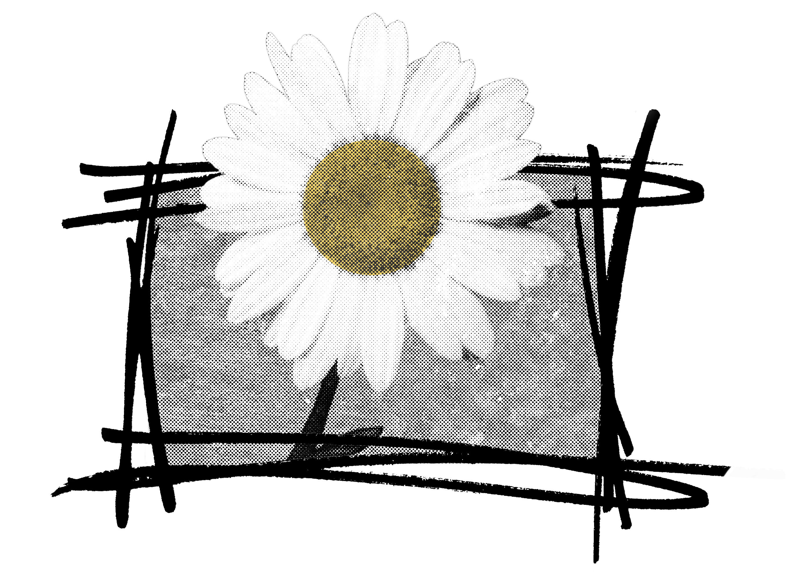

This is my website.
Above the tempests of our weekdays, Across the ashes and cindered homes of the past, Before the gates of the vacant future, We proclaim today to you artists, painters, sculptors, musicians, actors, poets … to you people to whom Art is no mere ground for conversation but the source of real exaltation, our word and deed. The impasse into which Art has come to in the last twenty years must be broken. The growth of human knowledge with its powerful penetration into the mysterious laws of the world which started at the dawn of this century, The blossoming of a new culture and a new civilization with their unpre-cedented-in-history surge of the masses towards the possession of the riches of Nature, a surge which binds the people into one union, and last, not least, the war and the revolution (those purifying torrents of the coming epoch), have made us face the fact of new forms of life, already born and active. What does Art carry into this unfolding epoch of human history? Does it possess the means necessary for the construction of the new Great Style? Or does it suppose that the new epoch may not have a new style? Or does it suppose that the new life can accept a new creation which is constructed on the foundations of the old? In spite of the demand of the renascent spirit of our time, Art is still nourished by impression, external appearance, and wanders helplessly back and forth from Naturalism to Symbolism, from Romanticism to Mysticism. The attempts of the Cubists and the futurists to lift the visual arts from the bogs of the past have led only to new delusions. Neither Futurism nor Cubism has brought us what our time has expected of them. Besides those two artistic schools our recent past has had nothing of importance or deserving attention. But Life does not wait and the growth of generations does not stop and we who go to relieve those who have passed into history, having in our hands the results of their experiments, with their mistakes and their achievements, after years of experience equal to centuries . . . we say . . . No new artistic system will withstand the pressure of a growing new culture until the very foundation of Art will be erected on the real laws of Life. Until all artists will say with us . . . All is a fiction . . . only life and its laws are authentic and in life only the active is beautiful and wise and strong and right, for life does not know beauty as an aesthetic measure . . . efficacious existence is the highest beauty. Life knows neither good nor bad nor justice as a measure of morals . . . need is the highest and most just of all morals. Life does not know rationally abstracted truths as a measure of cognizance, deed is the highest and surest of truths. Those are the laws of life. Can art withstand these laws if it is built on abstraction, on mirage, and fiction? We say . . . Space and time are re-born to us today. Space and time are the only forms on which life is built and hence art must be constructed. States, political and economic systems perish, ideas crumble, under the strain of ages … but life is strong and grows and time goes on in its real continuity. Who will show us forms more efficacious than this . . . who is the great one who will give us foundations stronger than this? Who is the genius who will tell us a legend more ravishing than this prosaic tale which is called life? The realization of our perceptions of the world in the forms of space and time is the only aim of our pictorial and plastic art. In them we do not measure our works with the yardstick of beauty, we do not weigh them with pounds of tenderness and sentiments. The plumb-line in our hand, eyes as precise as a ruler, in a spirit as taut as a compass . . . we construct our work as the universe constructs its own, as the engineer constructs his bridges, as the mathematician his formula of the orbits. We know that everything has its own essential image; chair, table, lamp, telephone, book, house, man . . . they are all entire worlds with their own rhythms, their own orbits. That is why we in creating things take away from them the labels of their owners . . . all accidental and local, leaving only the reality of the constant rhythm of the forces in them. 1. Thence in painting we renounce colour as a pictorial element, colour is the idealized optical surface of objects; an exterior and superficial impression of them; colour is accidental and it has nothing in common with the innermost essence of a thing. We affirm that the tone of a substance, i.e. its light-absorbing material body is $ts only pictorial reality. 2. We renounce in a line, its descriptive value; in real life there are no descriptive fanes, description is an accidental trace of a man on things, it is not bound up with tfie essential life and constant structure of the body. Descriptiveness is an element of graphic illustration and decoration. v We affirm the line only as a direction of the static forces and their rhythm in Ejects. 3. We renounce volume as a pictorial and plastic form of space; one cannot measure Space in volumes as one cannot measure liquid in yards: look at our space. . . what Is it if not one continuous depth? ‘i We affirm depth as the only pictorial and plastic form of space. 4. We renounce in sculpture, the mass as a sculptural element. IrJt is known to every engineer that the static forces of a solid body and its material strength do not depend on the quantity of the mass. . . example a rail, a T-beam, toe. .But you sculptors of all shades and directions, you still adhere to the age-old prejudice that you cannot free the volume of mass. Here (in this exhibition) we take four planes and we construct with them the same volume as of four tons of mass. Thus we bring back to sculpture the line as a direction and in it we affirm depth as the one form of space. 5. We renounce the thousand-year-old delusion in art that held the static rhythms as the only elements of the plastic and pictorial arts. We affirm in these arts a new element the kinetic rhythms as the basic forms of our perception of real time. These are the five fundamental principles of our work and our constructive technique.
